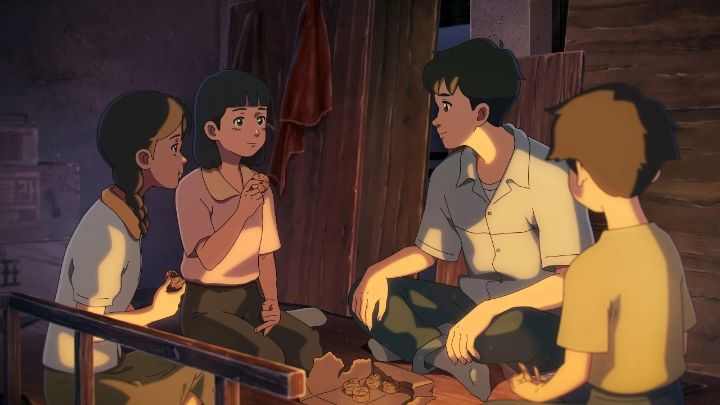

I was able to catch a few animated movies at the Fantasia Film Festival in Montreal in 2022. One of them was the Korean film "Chun Tae-il - A Flame That Lives On." It's the story of a real man (historically known as Jeon Tae-il) who was a human-rights activist in the 1970's, protesting poor working conditions in the country. He ultimately set himself on fire during a protest, dying soon after, and is celebrated today for his sacrifice to improve things. I was vaguely aware of major events like this in Asia, but otherwise knew nothing about it, so the movie was my main introduction. At the film festival, the director was in attendance to answer some questions on the subject.While the movie is a loving tribute to the man himself, it's unfortuntely a watered-down story to be more accessible to younger audiences, a shame given the severity and importance of the subject matter. We are introduced to Chun Tae-il as he grows up, his family increasingly in poverty as inflation grows, forced to give up school to work at a young age. Chun stays optimistic however, believing hard work will pay off. As a young adult, he manages to get a job as an assistant tailor in a factory. It doesn't pay well, but he assures his mother that it'll lead to a full tailor position in 2 to 3 years. Chun proves himself to be especially hard-working and earnest, as well as generous to his other co-workers, getting promoted much faster than expected.It's eerie how similar this outlook is to what adults are taught today. We're taught to study and work hard, to take entry-level jobs and apprenticeships out of school (with little pay, or sometimes no pay at all) with the promise of better wages years later. The only major change is the time and cost of modern schooling, which puts adults into a lifetime of debt that no job can pay off. And expecting a promotion with an honest wage in just 2 years?! "A Flame That Lives On" paints a rosey picture that seems much better than working conditions in North America in 2021, let alone Asia. About halfway through the film, Chun is increasingly aware of the poor state of the clothing factory he works in, now as a tailor / foreman responsible for his subordinates. It's effectively a sweatshop, a small room with two levels, with no air conditioning or ventilation. The workers are almost all women, including children well underage to be working there, cramped in tight quarters next to each other, for over 14 hours a day. Pay is based on output, changing week to week, and seems to decrease over time. At one point, a young woman gets sick and faints: it's turberculosis, clearly caused by low ventilation in the factory, but the company refuses to pay the medical bills and instead fires her. Chun Tae-il takes pity, and sets up a fund for co-workers to donate for her medication, but the act nearly gets Chun fired himself.... again, this is watered-down and doesn't look as bad in film as it should. I agree that long hours in a room without AC is a terrible way to work, but this matches the working and living conditions I and others have anecdotally experienced. In North America. In 2021. The female workers aren't particularly happy there, especially the older and experienced adults, but still come in and work without complaint. The children in the factory even seem to enjoy it to an extent, although having the kind Chun as their manager certainly helps. Anyway, this leads to Chun discovering that there were already laws in place meant to protect workers' rights, and that they simply weren't being enforced due to lack of awareness or interest. He gets other lead-tailors together, and they begin to form a worker's union. They get attention in the press. The government at first gives a "so what" attitude, but slowly comes around. The factory owners promise to make changes, but slowly, and clearly with the hope that the promises will be forgotten. They fire Chun, before eventually allowing him back, by which point the union had only grown in his absence.  It's during THIS section of the film that the tone matches the subject matter: Chun is punished for doing the right thing, and police and security explicity try to stop public protests in the interest of the rich owners. We even see police beating up protesters for acting out, ultimately leading to Chun's desparate act to not be silenced. It becomes a strong pro-union movie, almost like propoganda. Although again, I must say... too often I've seen unions force strikes to occur, requiring union membership payment to work for certain companies, effectively exploiting their members more than the companies themselves. In an idealized world, unions would be great, but in a more idealized world, unions wouldn't be necessary to begin with. As for Chun's suicide, the movie suggests he had encouraged his friends, his own mother, and a love-interest to attend the planned protest, talking about dates they'd have afterwards. It's not clear if he already committed to the act at this time; if so, it seems especially cruel to have them watch his death, even if it gave them the strength to continue the cause so that his death wouldn't be in vain. Sure enough, Chun's mother and siblings became prominent leaders in the cause, which would take decades longer before workers' rights would be observed and protected. At least, in theory... as I've stated, the current day seems as bad, if not worse, than what is portrayed in this movie's 1970s Korea. The death feels sudden, and doesn't match the tone and plight of what is observed: I don't know if the workers would have been grateful in the moment, or would they have been horrified to the sacrifice for something so small?In terms of production, the movie is luciously rendered in 2D animation, clearly inspired by Japanese anime. Backgrounds in particular are detailed and bright, reminiscent of Makoto Shinkai's digitally-produced art. The character designs and animation are a little weaker, clearly a sign of the movie's limited budget, and falling apart in small ways, like a low frame-rate in animation when the camera decides to pan. But generally, it's a strong production for Korea, and has a cinematic musical score to elevate it higher.Clearly, I have mixed feelings about the tone of the movie. I agree this is an important subject, and having experienced and witnessed poor conditions (not on a factory floor, but in white-collar offices), I know it could be portrayed in a dramatic fashion that makes clear why desparate messures were required. "A Flame That Lives On" doesn't provide that. When the director lamented in an interview that animation is produced in a assembly-line setting, with the assumption that it's children's entertainment instead of art, I lamented that this movie was written with children in mind, rather than taking a more serious look to convince and educate adults. It's much more an ode to the man, portraying him as perfect to a fault, rather than an ode to the cause he stood for. Which, based on the dying wishes, seems the exact opposite of what he would have wanted.
- "Ani" More reviews can be found at : https://2danicritic.github.io/ Previous review: review_Chivalry_of_a_Failed_Knight Next review: review_City_Hunter_-_Shinjuku_Private_Eyes